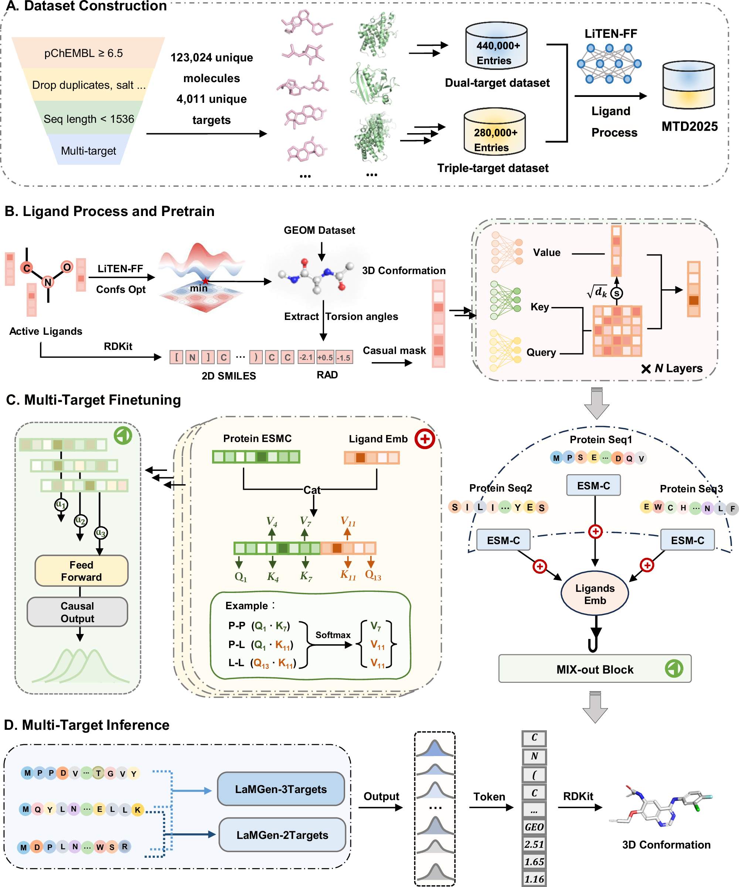
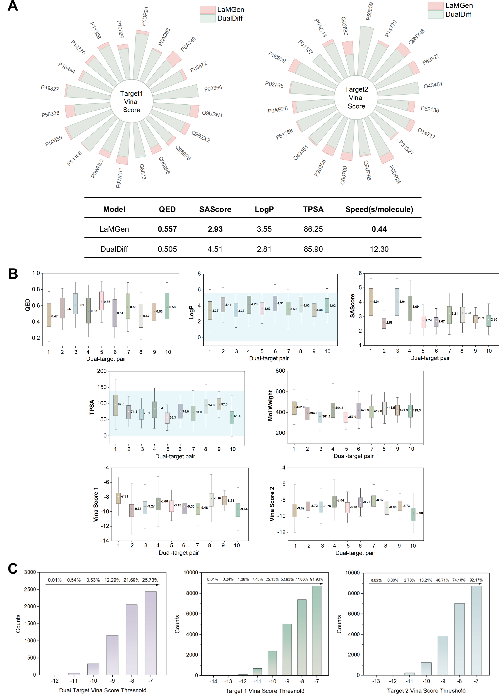
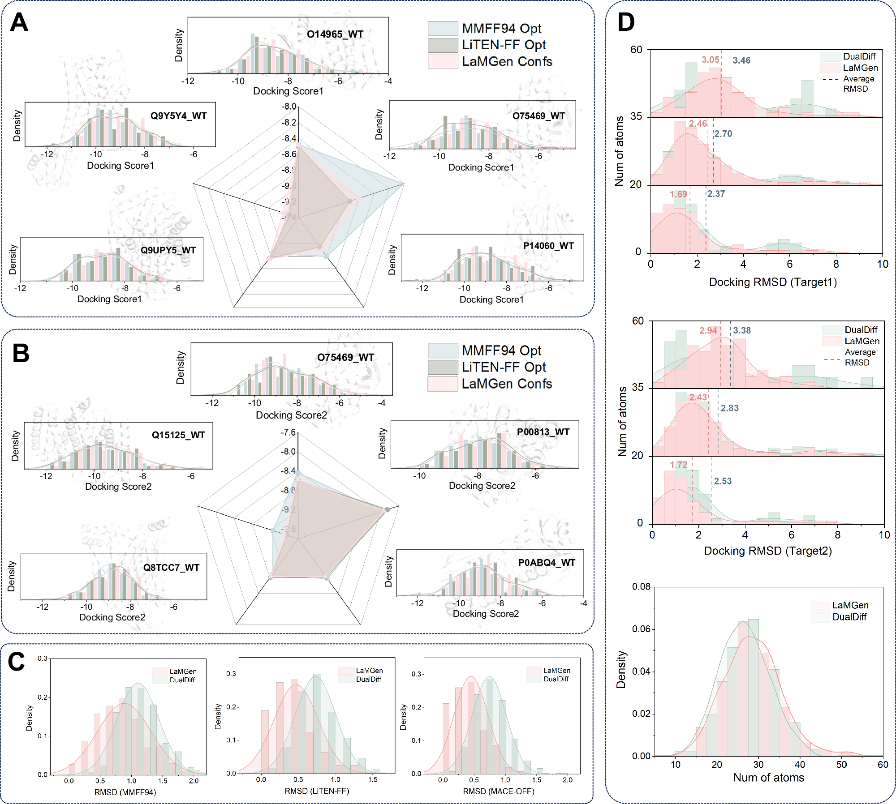
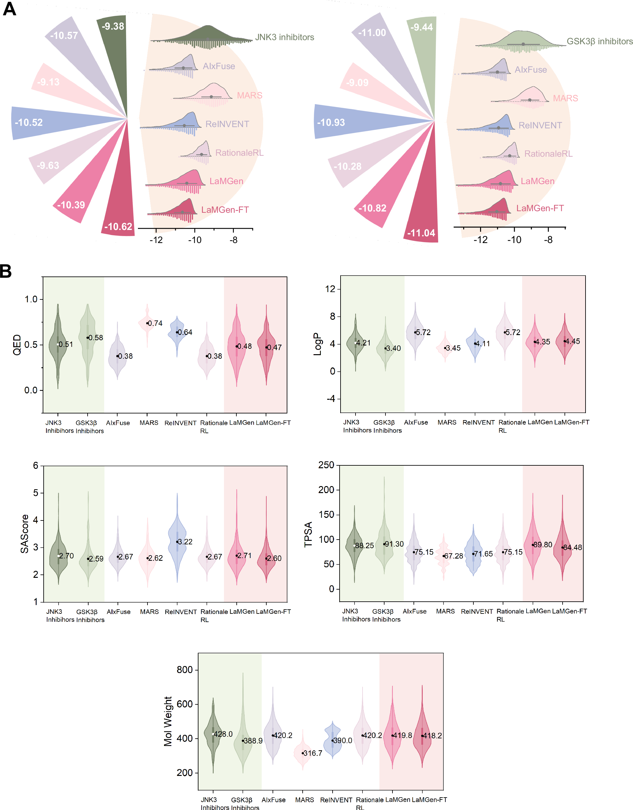
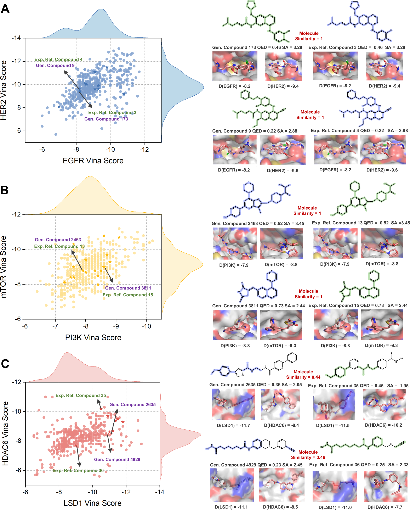
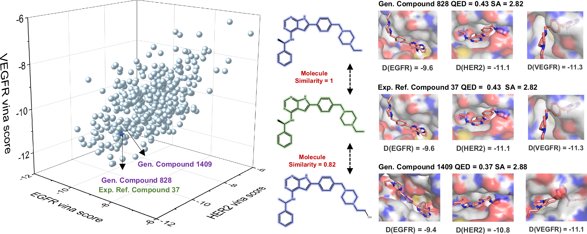

全文精读
LaMGen：基于大语言模型的多靶点药物三维分子生成
LaMGen: LLM-based 3D molecular generation for multi-target drug design
解读更新 2026-11-15 23:58 · 依据论文全文整理
全文精读已完成，文章版正在逐步升级。现有内容可继续阅读。
LaMGen研究如何仅凭多个蛋白序列生成兼顾结合需求与构象合理性的分子。框架利用GEOM预训练、MTD2025微调，将蛋白嵌入与离散扭转角表示结合。作者报告生成速度为0.44秒/分子，快于DualDiff，并通过构象比较和回顾性案例展示骨架重现及类似物探索能力。解读：其价值主要在条件生成与计算筛选方法，不应将对接优势视为实验药效；原文统计口径和流程衔接仍有疑点。
研究问题
多靶点设计要求同一分子兼容多个结合位点，同时满足药物性质要求，数据稀缺与组合复杂性使单靶点生成方法难以直接迁移。作者关注低序列相似度靶点组合及缺乏蛋白结构时的生成能力，核心问题不是单项评分最优，而是多种约束能否协调满足。
方法与路线
模型先学习SMILES与扭转构象映射，再以MTD2025进行多靶点适配。ESM-C编码蛋白序列，12层解码器自回归生成分子；随机因果掩码改变预测起点，两条蛋白—配体注意力分支以权重融合。低能构象提供结构先验，但并非真实结合姿态。
创新与比较
作者的特色是把序列条件、旋转感知构象token与多靶点生成统一，并构建含双、三靶点关联的MTD2025。解读：贡献更应理解为表示、数据和生成流程的整合；公式仅显式给出两分支加权，直接跨蛋白交互及输出对齐方式仍需进一步澄清。
证据与发现
图2报告LaMGen与DualDiff生成耗时为0.44与12.30秒/分子，QED为0.557与0.505。表1显示微调后总体成功率由4.84%升至8.46%，高于AIxFuse的5.40%。作者还展示已知骨架重现，但这些计算结果不能直接证明候选药效。
局限与边界
原文缺项及冲突包括：P6的TPSA单位缺平方、图2C比例口径矛盾；P9图4符号和图型说明不符；P12图6样本数200/500冲突，LSD1基准−9/−11冲突；P14两套构象流程衔接缺失。分别影响量纲、统计解释、增益判断与复现，不能擅补；计算评价亦不能替代药效实验。 原文核对： 正文承接TPSA讨论时，原页将面积范围写为“60–140 Å”，未显示平方上标；这是原页单位标示缺项，而非文字提取漏字。影响TPSA范围的量纲表达，不影响页面其余内容识读；不据此改写作者数值。； 图2C图注与正文及P5图形存在统计口径冲突：图注把中、右图定义为一个靶点低于阈值、另一个高于阈值的互斥类别；但在−9阈值，双靶点、中图、右图分别为12.29%、52.93%、40.71%，合计超过100%。正文则将后两者描述为各单靶点低于阈值的比例。原页可清楚核实该冲突，影响单靶点选择性及双靶点比例的解释，不能擅自确定哪一处应改。； 图4图注与原图表达不完全一致：A图注称左半圆显示平均Vina分数“absolute value”，但扇形标注保留负号；B图注称“box plots”并定义箱体及须线，实际绘制为小提琴形分布并叠加内部标记，未清楚展示所述标准箱须结构。影响分数符号及分布摘要标记的解释，不影响已显示数值的识读。； 图6样本数量存在原文内部冲突：本页正文及P10筛选说明写前500个生成分子，本页图6图注却写“top 200 model-generated molecules”。原页两处均可读清，无法确定实际绘图数量；影响三靶点分布的样本范围解释，不应擅自统一。； Gen.4929的LSD1比较基准不一致：本页正文写亲和力从−9.0改善到−11.1，但P11图5C明确标注参考36的D(LSD1)=−11.0，Gen.4929为−11.1。影响改善幅度的结论；按图为0.1而非正文所述2.1，资料不足以判定哪项原始数值正确。； 数据构象流程的衔接说明不足：P13至首称CREST搜索、每分子保留5个构象后用LiTEN-FF优化；P14数据预处理却称RDKit生成100个构象、优化后取单个最低能构象。原页均可读，但未说明两者分别适用于哪个阶段或如何衔接，影响构象训练样本与扭转角提取流程的复现，不能擅自合并。
方向关联
解读：与智能运维、结构设计和可靠性研究的联系属于方法迁移，而非直接成果。多蛋白条件可类比多工况约束，构象先验可类比物理可行域，生成后多指标检查可启发设计筛选；但论文没有故障预测、工程载荷或失效概率证据，不能据此宣称工程有效。
后续研究建议
建议先澄清构象数据流程、注意力分支对齐及统计口径，再独立评价全部生成样本，避免仅看筛选后的优胜者。进一步以独立能量计算和实验测定检验构象与活性；若迁移到工程设计，应新增多工况可行率及不确定性评价，而不是照搬对接指标。
阅读建议
建议作为多条件生成与物理合理性评价的方法参考重点阅读，尤其关注构象表示、迁移评价和多目标筛选；并非智能运维或工程结构可靠性的直接应用论文。
原图未改动。以下图注来自标注的来源，不据此补写摘要未报告的实验结论。
已取得的论文原图


原文图注与出处
A Construction of MTD2025 dataset. B Ligand processing via the LiTEN-FF potential model, followed by feature encoding using a model pretrained on the GEOM dataset to capture conformational priors. C Architecture of the multi-target generation model, integrating ligand and ESM-C-based protein encoders with the TriCoupleAttention module for joint representation learning. D Inference workflow for dual- and triple-target generation, utilizing solely input protein sequences to directly yield 3D molecular conformations. Source data are provided as a Source data file.
Su, Qun et al.
原文图页 · CC BY-NC-ND 4.0

原文图注与出处
A Performance comparison between LaMGen and DualDiff on Test Set 1 in terms of Vina docking scores, key drug-like properties, and generation speed. Each bar represents the average score for a target, a longer bar indicates a lower (better) docking score. Labels on each bar indicate the UniProt ID of the corresponding protein target. B Distributions of molecular properties and docking scores for 10,000 LaMGen-generated molecules on Test Set 2, including QED, LogP, SAScore, TPSA, molecular weight, and binding affinities against two targets. In the box plots, the center line indicates the median, the box bounds represent the 25th and 75th percentiles, and the whiskers extend to the minimum and maximum values within 1.5 times the interquartile range (IQR) from the box boundaries. C Proportion of generated molecules with affinities below threshold x ( x -axis). Left: lower than x for both targets; Middle: lower than x for Target 1 but higher than x for Target 2; Right: lower than x for Target 2 but higher than x for Target 1. Lower x values correspond to higher binding affinities. Source data are provided as a Source data file.
Su, Qun et al.
原文图页 · CC BY-NC-ND 4.0

原文图注与出处
A Vina docking score distributions for Target 1 across five dual-target protein pairs under different conformational regimes: MMFF94-optimized, LiTEN-FF-optimized, and LaMGen-generated conformations. B Vina docking score distributions for Target 2 across the same five dual-target protein pairs under the three conformational regimes. C Conformational validity comparison of molecules generated by LaMGen and DualDiff. RMSD is calculated with respect to conformations optimized by MMFF94, LiTEN-FF, and MACE-OFF, respectively. D RMSD distributions of generated conformations across different heavy-atom count ranges. Source data are provided as a Source data file.
Su, Qun et al.
原文图页 · CC BY-NC-ND 4.0

原文图注与出处
For each model, the top 2000 molecules were selected based on docking scores. A Vina docking score comparison for JNK3 (left) and GSK3β (right) inhibitors across different models. For each plot, the left semicircle shows the mean vina score (absolute value), and the right violin plot illustrates the score distribution. Error bars represent the standard deviation (SD). B Distributions of five key molecular properties: QED, LogP, SAScore, TPSA, and Molecular Weight. In the box plots, the center line indicates the median, the box bounds represent the 25th and 75th percentiles, and the whiskers extend to the minimum and maximum values within 1.5 times the interquartile range (IQR) from the box boundaries. Source data are provided as a Source Data file.
Su, Qun et al.
原文图页 · CC BY-NC-ND 4.0已取得的论文原图


原文图注与出处
For each system, the left panel displays scatter plots of docking scores on both targets for the top 500 model-generated molecules (dots), ranked by structural similarity to the experimentally validated active compound (stars). The right panel shows the known dual-target active compound and its closest LaMGen-generated molecules, with ‘ D’ indicating the Vina docking score. A Results for the EGFR/HER2 dual-target system. B Results for the PI3K/mTOR dual-target system. C Results for the LSD1/HDAC6 dual-target system. Source data are provided as a Source data file.
Su, Qun et al.
原文图页 · CC BY-NC-ND 4.0

原文图注与出处
Left: Scatter plots of docking scores across all three targets for the top 200 model-generated molecules ranked by structural similarity to known actives. Right: Reference triple-target active compound, its closest generated molecules, and the top-scoring compounds produced by LaMGen, with D indicating the Vina docking score. Source data are provided as a Source data file.
Su, Qun et al.
原文图页 · CC BY-NC-ND 4.0